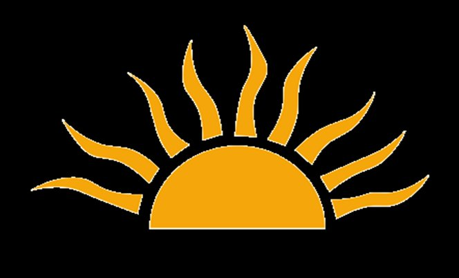

Alchemy Lab
Rotate the rings, shape the elemental balance below, and press Transmute to unlock teachings and symbolic synthesis.
Current Highlight
At the crown: Fixed Aquarius. Dominant: Water.

Rotate the rings, shape the elemental balance below, and press Transmute to unlock teachings and symbolic synthesis.
At the crown: Fixed Aquarius. Dominant: Water.